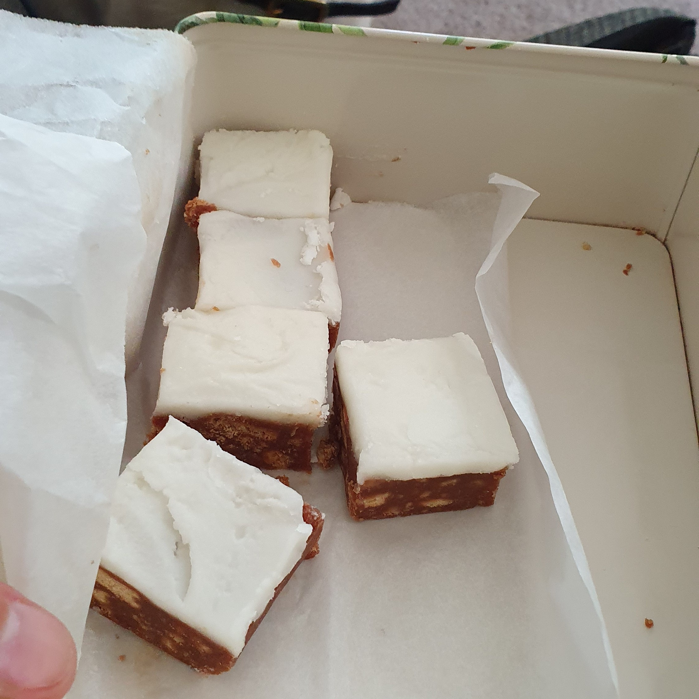

Grans Famous Fudge Cake

Ingredients
- 1 packet wine biscuits
- 200 g sugar
- 200 g butter
- 1 dessertspoon cocoa
- 1 beaten egg
Method
- Put butter, sugar, and cocoa in pot until melted.
- Add beaten egg, and then crushed wine biscuits.
- Return to stove for a few minutes.
- Press into greased tin and refrigerate.
- Ice with mint icing when it has cooled.